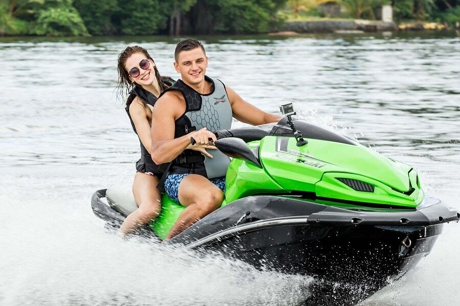

Bentota Beach

Bentota is perhaps the most popular beach town on
Sri Lanka's western coast, famous for its eponymous Bentota
Beach. Bentota Beach offers it all: golden sands bordered
by palm trees swaying softly in the air, crystal blue waters,
a relatively unspoilt, calm, and family-friendly ambiance,
and lots of water activities.
Water Sports In Bentota

Bentota is the premier water sports resort on Sri Lanka's
west coast, with tranquil lagoons, a moderate river, and a coral-filled
beach. On Bentota Beach, Aturuwella, and the Bentota River, one may
experience thrilling river cruises, diving, snorkeling, water skiing,
speed boating, kitesurfing, windsurfing, banana boating, and tubing.
In addition, various organizations, including as Bentota Water Sports
Centre and River Adventures, provide tandem lessons and guides.
Diving In Bentota

The pristine Indian Ocean at Bentota Island offers fantastic
diving possibilities, reaching depths of up to 20 meters. From Bentota's
beaches, one may take a boat to dive sites or simply jump into the amateur-friendly
seas teeming with rich coral reefs and gorgeous fish. In addition, water
sports centers provide outstanding PADI-certified scuba diving and diving trips.